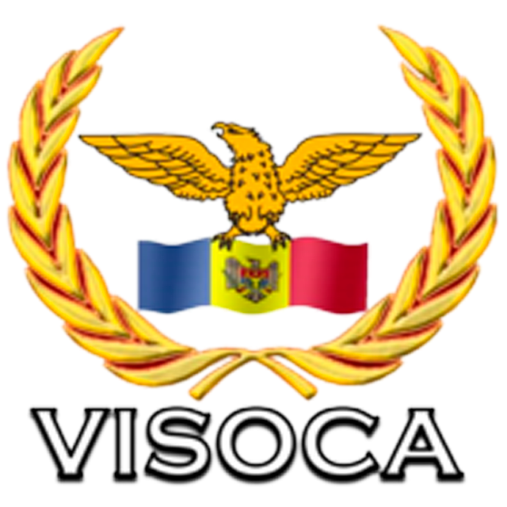

Acasă
Pezentarea generală
Transparența
Consiliul local
Instituții
Contacte
Galerie foto
Ministerul Agriculturii
Consiliul Raional
Președenția RM
Parlamentul RM
Instituțiile care activează pe teritoriul satului Visoca
Institutia Publica Liceul Teoretic Visoca -
Bicu Loreta
Institutia Medico - Sanitara Publica Centrul de Sanatate -
Brighidin Agnesa
Cresa - Gradinita "Prichindel" -
Dabija Tatiana
Firma De Productie Si Comert "Agrovispel S.R.L."
Intreprinderea individuala Borosean Angela -
Borosean Angela
Asociatia Obsteasca "Vis-Ecorural" -
Barbaros Aurel
Societatea Cu Raspundere Limitata "Imperiul Piramidelor" - Donos Liviu
Intreprinderea individuala Vrabii Dorin -
Vrabii Dorin
Societatea Cu Raspundere Limitata Greenfarm Invest -
Frunza Efim
Intreprindere individuala Bicu Alina -
Bicu Alina
Societatea Cu Raspundere Limitata Solearis - Invest -
Morei Corneliu
Societatea Cu Raspundere Limitata Codrean - Prim -
Codrean Serghei
Intrprindere individuala Lasovici Vladimir -
Lasovici Vladimir
Societatea Cu Raspundere Limitata Vita-Biofarm -
Catlabuga Ludmila
Asociatia Obsteaca Echipa De Fotbal De Amatori -
Ghenadie Mija
Asociatia Obsteasca Fotbal Club Visoca -
Plesca Andrei
În localitate activează:
Oficiul poștal -
Rotaru Veronica
Fabrica de confecții a huselor pentru automobile.
Centrul de testare a soiurilor de plante -
Catlabuga Eugenia
Farmacia -
Carp Emilia